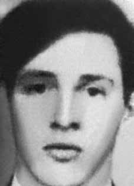

Elmo
Corrêa
CIRCUNSTÂNCIAS DA MORTE
Segundo o Relatório Arroyo, Elmo teria sido visto por seus companheiros pela última vez no dia 25 de dezembro de 1973, no episódio que ficou conhecido posteriormente como o Chafurdo de Natal. Nessa data, ele se encontrava nas imediações do acampamento da Comissão Militar da guerrilha, atacado pelas Forças Armadas. No entanto, não é possível determinar com precisão se Elmo foi um dos guerrilheiros mortos na ocasião. O Relatório da Marinha, entregue ao ministro da Justiça em 1993, afirma que Elmo foi morto em 14 de maio de 1974iv . Em relatório do CIE de 1975v , o Ministério do Exército elenca Elmo em listagem de “subversivos” participantes da Guerrilha do Araguaia, afirmando que teria sido morto em 14 de agosto de 1974 e que seu codinome seria Fogoió, informação divergente das demais disponíveis. O livro Dossiê Ditadura traz a declaração do camponês José Ferreira Sobrinho – concedida em 1980 à Caravana dos Familiares de Mortos e Desaparecidos da Guerrilha do Araguaia – sobre o local da morte de Elmo: “Parece que o marido dela [Telma Regina Cordeiro] era chamado Lourival, esse dizem que tinham matado ele lá no Carrapicho. Isso foi no final.”
According to the Arroyo Report, Elmo was last seen by his companions on December 25, 1973, in the episode that later became known as the Christmas Wallowing. On that date, he was in the vicinity of the guerrilla Military Commission camp, attacked by the Armed Forces. However, it is not possible to determine precisely whether Elmo was one of the guerrillas killed at the time. The Navy Report, delivered to the Minister of Justice in 1993, states that Elmo was killed on May 14, 1974iv. In a 1975 CIE report, the Ministry of the Army lists Elmo in a list of “subversive” participants in the Araguaia Guerrilla, stating that he had been killed on August 14, 1974 and that his codename would be Fogoió, information that differs from the other information available. The book Dossier Ditadura brings the statement by peasant José Ferreira Sobrinho – given in 1980 to the Caravan of the Relatives of the Dead and Missing of the Guerrilha do Araguaia – about the place of Elmo's death: "It seems that her husband [Telma Regina Cordeiro] was called Lourival, they say they had killed him there in Carrapicho. That was at the end."
Según el Informe Arroyo, Elmo fue visto por última vez por sus compañeros el 25 de diciembre de 1973, en el episodio que luego se conoció como el Revolcarse de Navidad. En esa fecha se encontraba en las inmediaciones del campamento guerrillero de la Comisión Militar, atacado por las Fuerzas Armadas. Sin embargo, no es posible determinar con precisión si Elmo fue uno de los guerrilleros asesinados en ese momento. El Informe de la Marina, entregado al Ministro de Justicia en 1993, afirma que Elmo fue asesinado el 14 de mayo de 1974iv. En un informe de la CIE de 1975, el Ministerio del Ejército incluye a Elmo en una lista de participantes “subversivos” de la Guerrilla de Araguaia, afirmando que había sido asesinado el 14 de agosto de 1974 y que su nombre clave sería Fogoió, información que difiere del resto de información disponible. El libro Dossier Ditadura trae la declaración del campesino José Ferreira Sobrinho – dada en 1980 a la Caravana de los Familiares de Muertos y Desaparecidos de la Guerrilha do Araguaia – sobre el lugar de la muerte de Elmo: "Parece que su marido [Telma Regina Cordeiro] se llamaba Lourival, dicen que lo habían matado allí en Carrapicho. Eso fue al final".